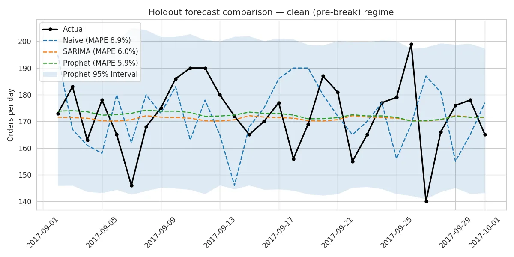

Inteligência de risco na cadeia de suprimentos
Atraso na entrega da causa à decisão: inferência causal, análise de sobrevivência, previsão, risco e otimização.
94,4%dos 10% de pedidos mais arriscados realmente atrasam, reconferido nos dados reais no CI

- Decisão que apoia
- Quais pedidos priorizar para não atrasar, e qual modalidade de frete usar.
- Quem usa
- Operações de logística e atendimento ao cliente.
- Quanto custa errar
- Atraso gera reclamação e reembolso; agir em todos os pedidos custa caro demais.
- Como gera valor
- O modelo separa os 10% de pedidos mais arriscados, dos quais 94,4% realmente atrasam, então a equipe age onde importa. A análise causal mostra que a Segunda Classe atrasa 1,99 dia a mais que a Padrão.
- Riscos e limites
- A otimização de frete economiza só 0,85% do custo esperado, e isso é reportado assim.
Problema
“Atrasamos com frequência” não é algo sobre o que a operação consiga agir. Ela precisa da causa, do momento, do volume que vem, dos pedidos em risco e do que mudar.
Solução
Cinco análises conectadas de 180.519 pedidos reais: pareamento por escore de propensão, modelos de sobrevivência, previsão de demanda, um modelo de risco calibrado e explicado com SHAP, e uma programação linear que transforma as notas de risco numa alocação de frete mais barata.
Como funciona
- O CI baixa o dataset real (com checksum fixo), valida contra um contrato de dados, roda os notebooks de novo e falha se algum número publicado mudar.
- Efeito causal estimado em 35.216 pares pareados, com os 78 níveis de covariáveis balanceados.
- A otimização usa notas de risco fora da amostra e é testada sob estresse com 10.000 simulações de Monte Carlo.
Resultados
| 1,99 dia | a mais de atraso na Segunda Classe que na Classe Padrão, frente ao prometido |
| 33% | menos erro de previsão que a linha de base ingênua (MAPE de 5,9% contra 8,9%) |
| 94,4% | dos 10% de pedidos mais arriscados atrasam (AUC de 0,73) |
Limites
A otimização economiza 0,85% do custo esperado em pedidos que o modelo nunca viu: real, mas pequeno, e reportado assim.
Stack
statsmodels, lifelines, Prophet, XGBoost, SHAP, PuLP